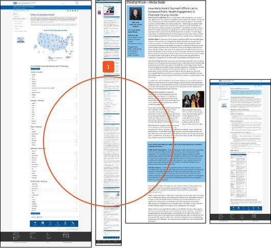
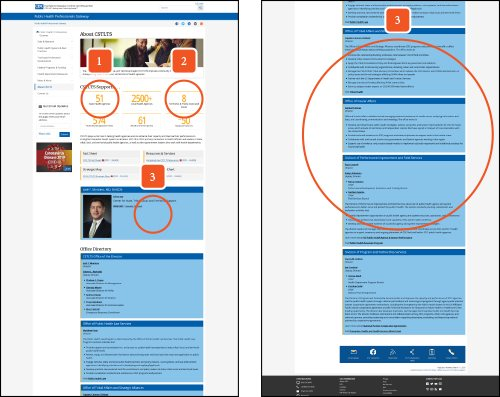
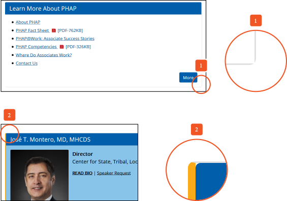

CDC Public Health Law
In May 2020 I ran a two-week heuristic evaluation of the Public Health Law section of cdc.gov, working with the agency Viscid. The section runs on CDC's sitewide content management design system, so the findings reached well beyond it. I rated every issue by severity so CDC's team could fix the worst first.
How I evaluated
I reviewed each page against eight heuristics: consistency, standardization, cognitive load, navigational effort, aesthetic integrity, information architecture, recognition and linguistic clarity. Each finding got a low, moderate or high priority based on how much it hurt the experience.
What I found
High priority
Dense pages with little space between sections were hard to scan. Splitting long pages and adding space between headers and content would let people find what they need faster.

Moderate priority
On the About page, the office directory's heavy styling competed with the content it was meant to support, and numbers set as images would be hard to update.

Low priority
A CSS error left gaps in rounded card corners, a small fix with an outsized effect on polish.

Outcome
I wasn't involved in implementation and can't confirm which recommendations were adopted. Revisiting cdc.gov later, many of the patterns I flagged, especially content density and visual hierarchy, appear to have been addressed. The full evaluation is available on request.